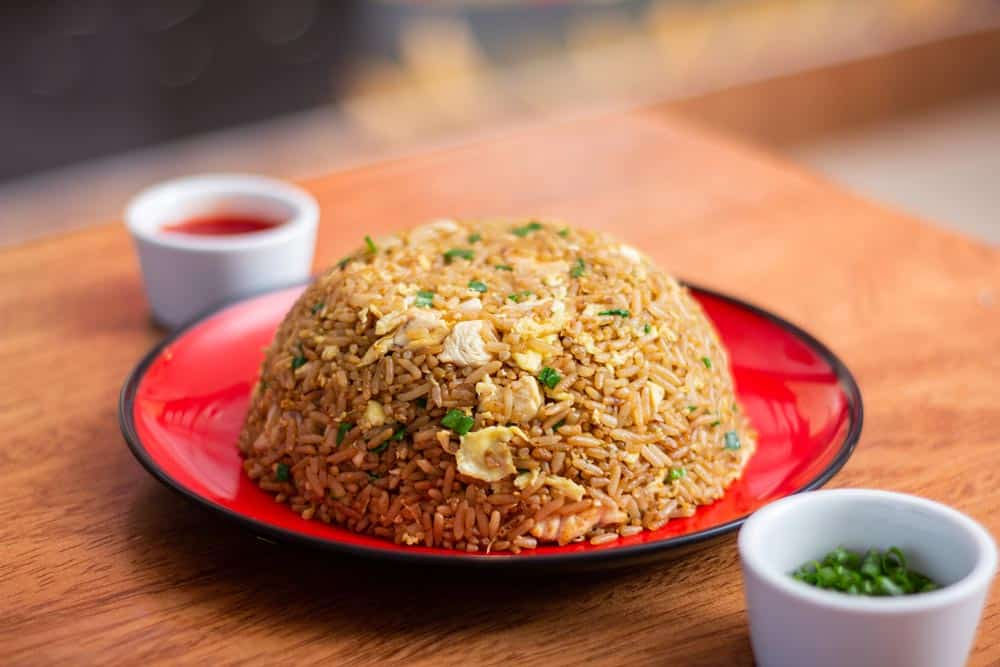
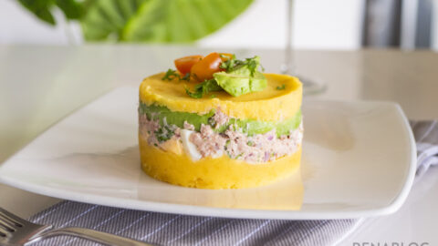

El arroz chaufa es un plato de la gastronomia peruana que fusiona
elementos de la cocina china y peruana.

La causa limeña es un plato tradicional de la gastronomia peruana
que se prepara con papa amarilla, ají amarillo y limón.